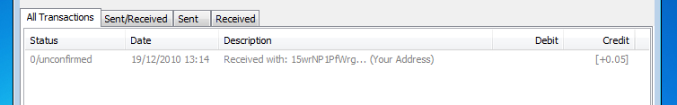

This page is a detailed tutorial to help new users understand and using bitcoin. After you read this page, you'll know the basics of what bitcoin is and how it is structured, how to get and install the bitcoin client, where to get coins, and how to use the client to send and receive transactions.
If you want to ignore all the details of how the system works, and just want to start using it, see the Getting started page instead.
What is Bitcoin
Bitcoin is a distributed digital currency based on strong cryptographic principles. Each coin is assigned to the owner's public key, and is transferrable via cryptographically signed messages.
Getting started
In this section, you'll learn where to get the client, how to install it on different operating systems, and download the block chain.
Download and install the client
First, download the bitcoin client from http://bitcoin.org/. Choose the appropriate link depending on your operating system, and install in the usual manner. For Windows, easiest is probably the executable installer. For Linux, note that the tar.gz contains the binary build, in addition to the source, so if you run a recent distribution, you should be able to just run the binary without compiling yourself.
Issues with Linux package repositories
Be warned that the version of Bitcoin Core in some package repositories are severely out of date and may be harmful to use. For Debian, users should use the package from the 'unstable' repository. For Ubuntu and derivatives, please use the PPA link on bitcoin.org. Please see this guide for details on how to use the PPA. You can also choose to use the static binary or to compile from source (both are in the 'tgz' file on the bitcoin.org download page), although updates will not be automated. Please refer to this page for the latest version number.
Starting the client and connecting to the network
?First time run fin.png Bitcoin comes with a GUI client called "bitcoin", and a CLI (text-mode) client called "bitcoind". It is probably more user-friendly to start with the GUI, so launch the bitcoin client.
{kind=link}
When you start for the first time, your bitcoin wallet will be created automatically, and the client will attempt to establish connections to other nodes on the network and start downloading the bitcoin block chain. You must get all of the blocks in the chain before sending/receiving transactions. Click here to see the current number of blocks in the chain. This download may take as long as several hours.
Client features
Your starting bitcoin address (you can have as many as you want - we'll talk about ?addresses| later) shows in a text box at the top. Right below it is your total bitcoin balance, which, of course, to start with will be zero. There is a list box below it showing all your transactions, which can be variously filtered with tabs, which again will be empty to start with.
The status bar at the bottom will display some important information. If you have ?bitcoin generation (block hashing)| turned on, on the left the client will display your hash rate. To the right of that, you will see the number of bitcoin nodes your client is connected to, then, the number of blocks your client has in its chain, and finally, the number of transactions you have in your wallet.
Using bitcoin
In this section you will learn about bitcoin addresses, sending and receiving transactions, the block chain and transaction confirmations, where to get your first bitcoins (faucet), generation. Tips on keeping wallet safe.
Getting your first bitcoins
There are few things more exciting than getting your first bitcoins! So once you have all the blocks downloaded, head on over to the bitcoin faucet, fill out the form and put in your bitcoin address, and receive some free bitcoin! (You can do this before finishing the block chain download, but you won't see the coins in your wallet until you finish downloading the blocks... which would put a damper on the whole excitement bit.)
See Samples and Marketing Offers for other free bitcoins and marketing offers.
Once you submit the form successfully, you should see a new transaction in your client within seconds. But it will be grayed out, and have 0/unconfirmed status: 
{kind=link}
Once your transaction makes it into the block chain, the confirmation count will grow in step with the number of blocks in the chain. By default, the client stops showing "unconfirmed" after the transaction is 6 blocks deep in the chain: ?Six confirms bitcoin client.png
{kind=link}
Bitcoin addresses
You can create as many new addresses as you like. Using a different address each time helps to preserve your anonymity.
You cannot send BTC to an invalid address. Client will refuse to send payment to a misspecified address. (Though with care you can craft a valid but nonexistent address.)
Generating bitcoins
In order to generate bitcoins, you will need to perform bitcoin mining. As of 2013, the competition for bitcoin mining has become intense, so you are unlikely to achieve much without specialized hardware.
See also
- Getting started A brief tutorial for the impatient
- BitcoinX.io View where to buy and store your bitcoins on the only Bitcoin peer-to-peer review site, BitcoinX
- What Is Bitcoin?
- What Is Bitcoin Mining?